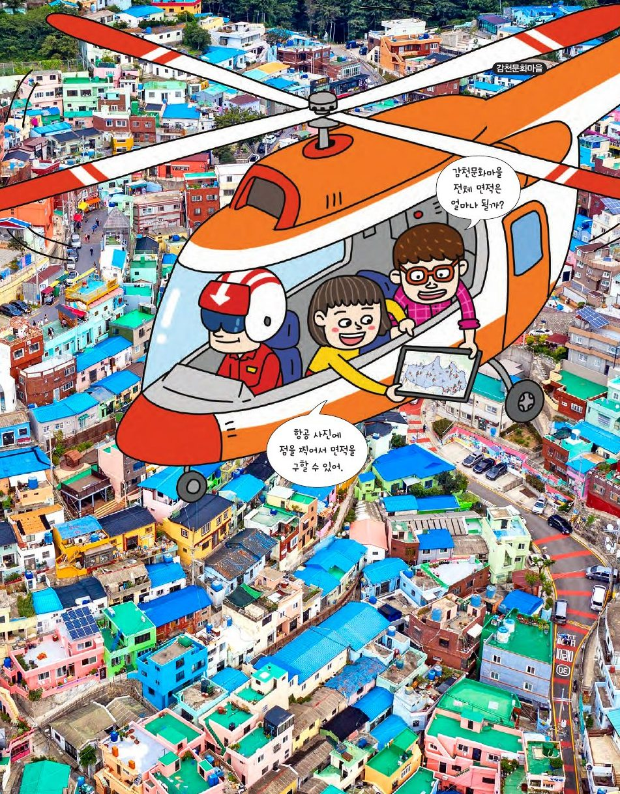

픽의 정리
지도에서 경계선에 점을 찍으면 면적이 자동으로 계산돼요. 감천문화마을의 면적은 얼마나 될까요? 격자점만 세어 넓이를 구하는 마법 같은 정리를 발견해 보세요.
★ 이 단원에서는 — 픽의 정리를 이해하고, 격자 다각형의 넓이를 계산할 수 있다.

📍 감천문화마을x좌표, y좌표가 모두 정수인 점이 격자점, 꼭짓점이 모두 격자점인 다각형이 격자 다각형. 격자점을 눌러 삼각형을 그려 보세요(점 3개 → 자동 완성). 내부 점 i와 둘레 위의 점 b를 세어 봐요.
🔍 생각해 보기
힌트 보기
넓이 1/2인 가장 작은 격자 삼각형은 내부 점 0, 둘레 점 3 → 0 + 3/2 − 1 = 1/2. 삼각형 몇 개를 그려 i, b, 넓이를 표로 모아 보면 규칙이 보여요.
격자점을 차례로 눌러 다각형을 그리고 '닫기'. 여러 다각형을 그려 표를 채우고 S = □ + □ − □ 를 찾아보세요.
| 다각형 | 넓이 S | 내부 점 i | 둘레 점 b | i + b/2 − 1 |
|---|
🔍 픽의 정리
정리 보기
구멍이 없는 격자 다각형의 넓이 S = i + b/2 − 1. 오스트리아 수학자 픽(Georg Pick, 1859~1942)이 1899년에 증명했어요.
한 칸이 1cm인 격자에 손바닥을 대고(화면에 손을 대 보세요!) 손 모양에 가장 가까운 격자 다각형을 그린 뒤 픽의 정리로 넓이를 구해요. 격자점을 눌러 따라 그리고 '닫기'.
바깥 다각형을 그려 '닫기'한 뒤, 이어서 구멍을 그리고 '닫기'하세요. 구멍 h개일 때 S = i + b/2 − 1 + h 가 되는지 확인해요. (b에는 구멍 둘레의 점도 포함)
🔍 제2의 픽의 정리
정리 보기
구멍이 h개인 격자 다각형의 넓이 S = i + b/2 − 1 + h. 구멍마다 둘레 점이 늘어 −1이 하나씩 더 생기므로 그만큼 +h로 보정해요.
지도 이미지를 올리고(캡처한 부산 지도 등) 한 칸의 실제 길이를 정하면, 격자점을 눌러 경계를 따라 그릴 수 있어요. 픽의 정리로 면적이 나옵니다. 부산광역시 실제 면적은 약 770 km².
실제 면적과 차이가 나면? 칸을 더 잘게(칸 수 ↑) 하고 점을 더 많이 찍으면 가까워져요.